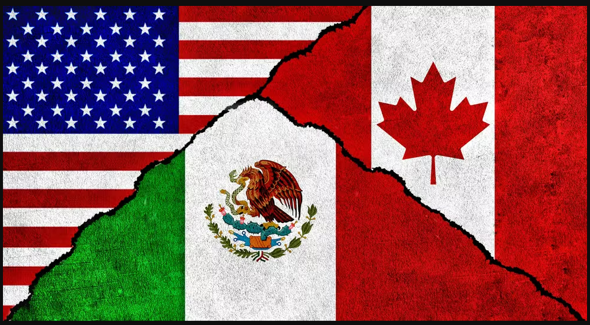

O Canadá será um dos países-sede da Copa do Mundo FIFA 2026. Conhecido por sua grande extensão territorial, qualidade de vida e diversidade cultural, o país receberá partidas em cidades como Toronto e Vancouver.
Os Estados Unidos serão o principal anfitrião da Copa do Mundo de 2026, concentrando a maior parte dos jogos do torneio. O país possui estádios modernos, excelente infraestrutura e experiência na organização de grandes eventos esportivos.
O México fará história ao se tornar o primeiro país a sediar três edições da Copa do Mundo, após receber o torneio em 1970 e 1986. Apaixonados por futebol, os mexicanos vivem intensamente o esporte, que faz parte da cultura nacional.